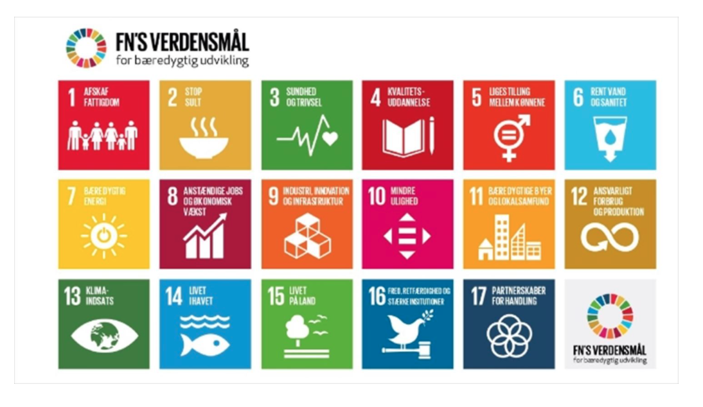

Designthinking er at der er fire faser man skal igennem, og et godt eksempel på hvordan man kan løse sådan en opgave er ved at man tager et skridt af gangen.
Første fase er Empathise, i denne fase går det ud på for finde ud af hvordan man skal løse en case, derfor er det en god idé at kunne forstå hvilken situation man er i.
Denne øvelse går ud på at man får en idé om hvad man skal bruge disse faser til på længere sigt, så derfor er godt man starter med den første fase hvor man ikke skal være færdig med produktet.
Det første var at finde ud af Skive Festival gør for sine kunder og hvilke udfordringer de har.
Hvad er Skive Festival.
Skive Festival (tidligere ‘Skive Beach Party’) er en multi-festival som hvert år bliver holdt på strandtangen ved lystbådehavnen i Skive. Den blev afholdt første gang i 1992 og festivalen har fire scener og tilbyder musik i alle genrer, derudover er der plads til totuseinde gæster samt mad- og drikkeboder.
Skive Festival har en bred målgruppe, og vil gerne ud til masser af mennesker, lige meget alder fra hele landet. Men i 2010 var et dårligt år og en dårlig periode, de kom ovenpå igen efter ny bestyrelse i 2017.
Den anden fase er Define, det går ud på at finde ud af om problemstillingerne er relevante fra første fase.
Problemdefinitionen er hvordan kan Skive Festival nå ud til flere publikummer som fx de ældre. Derfor er det relevant at Skive Festival ønsker at have en større indtjening da det tiltrækker flere mennesker som fx de ældre. Derefter blev der lavet et SWOT-analyse hvor at se problematikkerne og mulighed på casen.
Disse to billeder er med til at beskrive hvad enn SWOT-analyse går ud på og hvordan man skal sætte den op, så det bliver overskuelige at se på.
Den tredje fase er Ideate, der kom det frem til at der skulle laves en musikvideo, da det er mange nemmere at nå ud til mennesker på, da det er en god reklame, på hvad Skive Festival tilbyder.
Den sidste fase er Prototype, det er så her man laver sit produkt og skal teste den for se om den fungere.
I Designthinking projektet, så er det at man skal bruge de fire faser og følge dem fra start til slut. Derfor i første fase var at man i sin gruppe blev enige om at i hvert fald en af de 17 verdensmål.

Ligesom i Hackathon, så i dette projekt, skal mam finde en case, hvor så at løse den. Derefter anden fase var færdig, bleve der lavet nogle videoer der fortæller om hvad der er blevet lavet i disse to første processer.
Det næste var at gå i gang med fase tre, og til sidst fase fire. Men for at kunne gå i gang med de sidste faser, så bliver man nødt til at lave en tidsplan over hvor meget man gerne vil have med, så man får en god information om hvad det handler om.